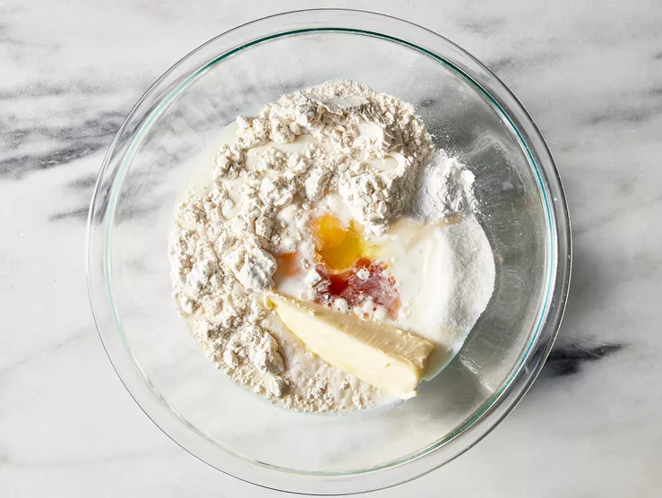
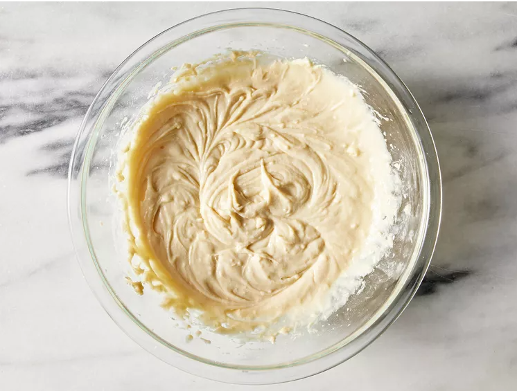
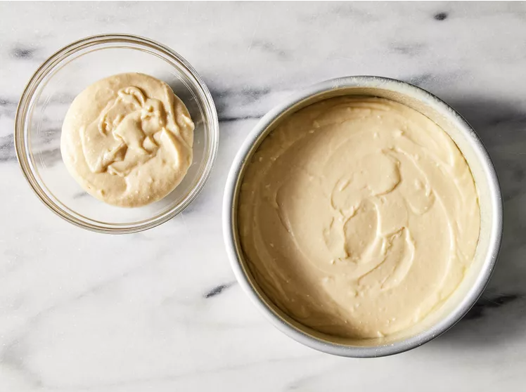
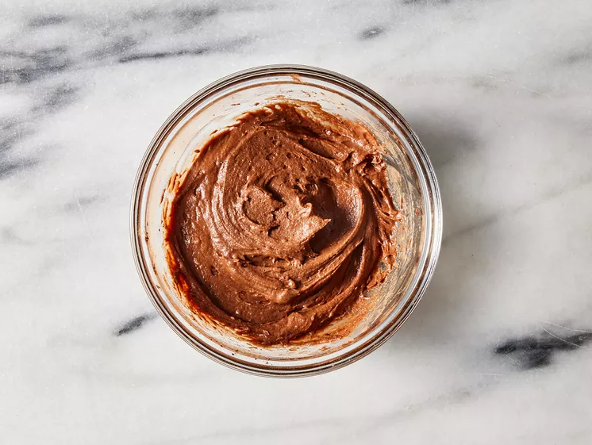
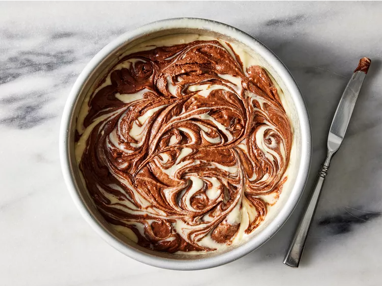

Preheat the oven to 350 degrees F (175 degrees C). Grease and flour a 9-inch round pan.
Step 2
Place flour, sugar, milk, eggs, butter, baking powder, vanilla, and salt into a large bowl.

Step 3
Mix slowly to moisten, then beat with an electric mixer at medium speed for about 2 minutes until smooth.

Step 4
Reserve 3/4 cup batter; pour remaining batter into the prepared pan.

Step 5
Stir cocoa into reserved batter until even in color.

Step 6
Drop chocolate batter by large spoonfuls on top of vanilla batter; swirl cocoa batter into white batter using a knife to create a marbled appearance.

Step 7
Bake in the preheated oven until a toothpick inserted into the center comes out clean, about 30 to 35 minutes. Cool briefly on a wire rack before inverting carefully onto a serving plate or cooling rack. Let cool completely.